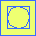

To activate particle picking, select the "Micrograph/Pick particles" menu item or the boxing tool (square and circle icon). A window will open with a "Boxes" menu and a listing of parameters in a window:
- Boxes:
- Delete all boxes - delete all boxes in memory (no recovery!).
- Delete unselected boxes - delete not selected boxes in memory (no recovery!).
- Renumber particles - start from 1 and renumber all particles.
- Pick particles - automatically pick particles (see the dialog box below).
- Extract particles - extract the picked particles.
- Close - close window and deactivate particle picking.
- Parameters:
- Box size - 3 dimensions of a box (z is always 1 for 2D images).
- Bad radius - circle radius for bad regions.
- Particles picked - number of particles picked in the current micrograph and in the whole project.
- Bad regions - counts bad regions (not modifyable).
- FOM - a slider to select particles based on their FOM values.
- Radiobuttons to display/hide boxes, labels and bad areas.
- Automatic renumbering - turn this off to preserve particle numbers when deleting some.
- Color by FOM - display boxes colored to reflect the FOM (red is high).
- Previous/Next micrograph - buttons to navigate micrographs.
To see the particles more clearly at scales below one, select the "Averaging mode". This mode is slow because it displays an average of the data under each pixel rather than just the nearest pixel.
The "Pick particles" menu item starts automatic picking, which is based on local cross-correlation with a generic template and may not work in many cases.
Particles (yellow) and bad areas (red) picked on a typical micrograph
Mouse controls for particle picking
- Left button: create a box, or move a box or bad circle
- Middle button: create a bad circle, or move a box or bad circle
- Control - left button: create a bad circle, or move a box or bad circle
- Shift - left button: delete a box or bad circle
Clicking the left mouse button in an empty region on the image creates a new selection box. Clicking the left or middle button inside a box allows that box to be moved.
Clicking the middle button in an empty region on the image creates a new "bad" circle. Bad circles are areas that will be deleted when the particles are extracted from the micrograph. On a Mac, pressing the control key and clicking the mouse button have the same effect. Clicking the left or middle button inside a bad circle allows that circle to be moved.
To delete a box or bad circle, hold down the shift key and click the left button inside the box or circle.
The selection boxes are numbered consequtively, so that deleting a box results in all the boxes with larger numbers being renumbered.
Saving and reading particle coordinates
The "Micrograph/Read parameters" and "Micrograph/Write parameters" menu items of the main Bshow window are used to read and write parameter files (usually in STAR or XML formats).
Automatic particle picking
Particles can be picked automatically using the menu option "Boxes/Pick particles". A circular disk is generated with a specified radius and locally cross-correlated with the micrograph to locate particles. The following parameters can be set:
Parameters for automatic particle picking
- Particle radius - radius of synthetic circular disk used for automatic picking.
- Particle edge - soft edge width used for automatic picking.
- High resolution limit - maximum cross-correlation frequency (angstrom).
- Low resolution limit - minimum cross-correlation frequency (angstrom).
- FOM threshold - threshold in cross-correlation map to pick particles automatically (-1 => threshold set automatically).
(Note: The method may not yield acceptable results, especially for non-spherical particles)
3D particle picking
Open a 3D image in bshow and before doing anything, make sure the pixel size is set correctly. Find an appropriate scaling and contrast to see the particles, perhaps using the "Averaging mode" to improve the visual effect.
Select the "Micrograph/Pick particles" menu item. Choose a box size that would comfortably include a particle in all 3 dimensions. The bad area radius should typically be about half the box radius, but that is up to the user. Use the "Window/Magnify" option to open a magnified display of the three orthogonal slices at the cursor. For each particle, go through the slices to find the middle of the particle and click on the center to pick it. This 3D box can be moved in x and y to position it better. To reposition it in z, go up or down through the slices and click in a slice deemed to be cutting through the middle of the particle. If there are bad features close to a particle (i.e., intruding into the box), a bad area can be selected by the middle button (or control-left button) and positioned to cover an undesirable feature. Both boxes and bad areas can be deleted with shift-left button.
When all the particles have been picked, make sure the "Particles" window is in front by clicking on it. Then select the "Boxes/Extract particles" menu item and save it to a multi-image file (only the PIF, .pif, and SPIDER, .spi, formats are true 3D multi-image formats) or to individual numbered files.
Reading and saving CTF parameters
Next click on the main window and select the "Micrograph/Write parameters" item to save the micrograph parameters to a STAR or XML file (extension .star or .xml). This parameter file can be read back into bshow with the associated micrograph or particle image file.